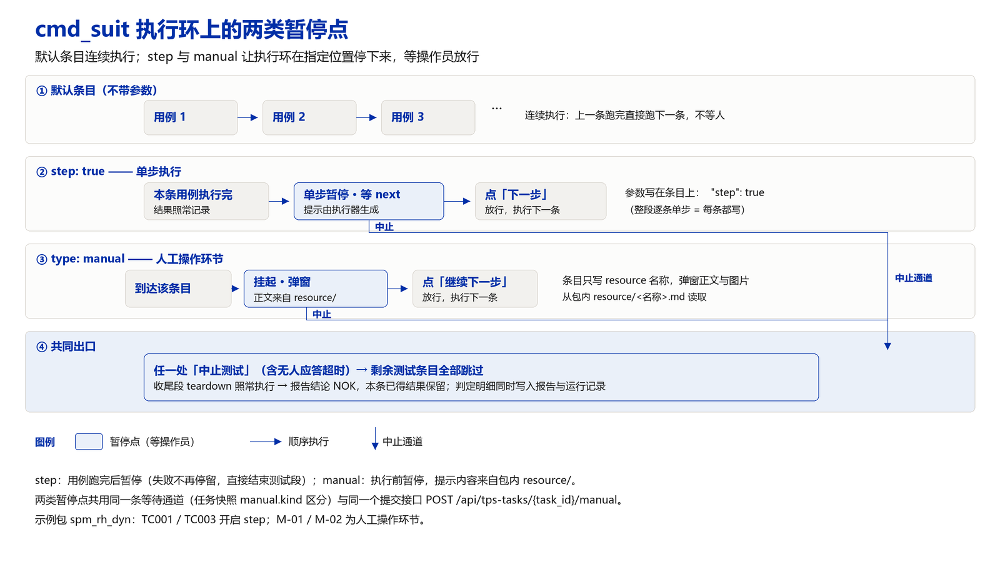

01 · 现状基线（逐条核对代码）
| 层次 | 现状 | 代码位置 |
|---|---|---|
| 清单层 | type: manual（别名 manual / 人工 / human，读取 type 或 kind）配合 resource（包内 resource/ 下的 .md / .markdown / .txt，允许一层子目录）与可选 timeout_s；单步暂停为 step: true（别名 single_step / step_hold）；条目未写 name 时取 resource 的文件名主干 | manifest.py:26-45、154-178、210-252 |
| 运行层 | 主循环遇到人工条目后，按「运行副本 resource/ → 运行副本根目录 → 源 TPS 包 resource/」的顺序查找提示文件，写入任务快照 task["manual"]，随后阻塞等待；单步暂停复用同一通道，以 kind 区分；两者默认等待时长均为 1800 秒 | main.py:739-748、950-1067、1130-1171 |
| 交互层 | 人工条目使用模态对话框（渲染 Markdown），单步暂停使用顶部横幅与步骤行内按钮；提交接口为 POST /api/tps-tasks/{task_id}/manual | ExecuteView.vue:583-620、688-707；main.py:1293-1320 |
| 记录层 | 步骤状态为 passed / aborted / failed（中止后测试段记 skipped）；运行日志记录决定值与时刻；报告的类型列显示「人工操作」与「测试用例 · 单步」 | main.py:1144-1180、manifest.py:340-343 |
复核中确认的四项事实：
- 中止后的跳过规则由段型隐式决定：主循环按
type == "test"跳过（main.py:1135），而人工条目的type取自所在段（setup→init、test→test、teardown→teardown，manifest.py:45）。因此cmd_suit中的人工条目在中止后被跳过，teardown中的人工条目仍会弹出。该行为符合「收尾段照常执行」的设计意图，但清单无法为单条声明例外。 - 决定集合不可声明：快照中的可选决定由后端固定给出，清单无法声明「本条允许判定不通过后继续」或「本条允许跳过」。
- 超时与判定失败共用状态值：等待超时记为
failed并以TIMEOUT标记区分（main.py:1153），报告中与用例判定失败同属一个状态值，只能依靠明细文本区分。 - 提示内容随任务快照整体下发：
_wait_operator将整篇 Markdown 写入task["manual"]["markdown"]，界面每次轮询任务均会重新接收全文；内容在暂停时刻读取，运行过程中修改文件不会留下记录。

02 · 本次已落地的变更：等待期间允许取消
需求：暂停点弹出后，等待操作员应答期间必须允许取消，取消立即生效，不必等到超时（默认 1800 秒）。
语义定义。等待结束后按下列四种结果之一处理，取消与中止的收尾路径一致，区别在语义与记录：
| 结果 | 触发方式 | 本条记录 | 后续处理 | 整轮结论 |
|---|---|---|---|---|
next | 操作员点「继续下一步」 | 通过 | 继续执行下一条 | 不受影响 |
abort | 操作员点「中止测试」 | 已中止 | 剩余测试条目跳过，收尾段照常执行 | NOK |
cancel | 操作员点「取消本轮测试」，或任一时刻调用取消接口 | 已取消 | 剩余测试条目跳过，收尾段照常执行 | NOK |
timeout | 无人应答且未取消，等待达上限 | 失败（标记 TIMEOUT） | 剩余测试条目跳过，收尾段照常执行 | NOK |
实现要点：
| 方面 | 变更 |
|---|---|
| 等待通道 | 由一次性 event.wait(timeout) 改为 1 秒一轮的分段等待，同时检查任务的取消标记，因此取消请求可在等待期间立即唤醒任务线程（main.py:995-1010） |
| 决定接口 | POST /api/tps-tasks/{task_id}/manual 的 decision 增加 cancel，并与 abort 分开记录；非法取值仍由接口拒绝 |
| 取消接口 | 新增 POST /api/tps-tasks/{task_id}/cancel：运行中与等待期间均有效；任务已结束时返回失败，不改变记录 |
| 任务快照 | manual.options 增加 cancel，并新增 manual.cancellable；任务新增 cancel_requested 与 cancel_at |
| 界面 | 人工对话框与单步横幅新增「取消本轮测试」按钮（带二次确认）；运行期间任务状态行新增「取消运行」按钮 |
| 记录 | 本条明细分别为「操作员取消本轮测试（条目名）」；跳过条目的原因为「操作员取消本轮测试，未执行」或「收到取消请求，未执行」；单步暂停点取消时，该步骤的 hold.status 记为 cancel |
| 设计文档 | 同步更新《uut.json 文件结构与设计》§9.1–§9.3 的选项表、行为表与接口说明 |
验证结果（模拟模式，真实后端进程，唯一 UUT SPMDYN000099，TPS spm_rh_dyn）：
| 场景 | 操作 | 结果 |
|---|---|---|
| A | 单步暂停点（TC001）弹出后经决定接口取消 | 等待 0.5 秒内结束；本条通过、后续 6 条测试条目跳过、TD01 收尾执行；整轮 failed（NOK） |
| B | 单步暂停点弹出后经取消接口取消 | 同上 |
| C | 单步暂停点弹出后经取消接口取消（另一任务） | 同上；日志含「操作员取消本轮测试」 |
| D | 单步放行至人工条目 M-01 后经决定接口取消 | M-01 记为已中止/已取消，明细为「操作员取消本轮测试（读头装夹与外观确认）」；后续测试条目跳过且原因为取消；TD01 执行；报告生成 |
| E | 运行中（未处于等待）直接取消 | 命中运行中取消分支，全部测试条目跳过且原因为「收到取消请求」，SETUP01 与 TD01 均执行 |
| F | 任务结束后再次调用取消接口 | 返回失败「任务已结束，无法取消」 |
边界说明：
- 运行中（未处于等待）的取消在步骤边界生效：取消发生在某条用例执行期间时，该条用例的 pytest 子进程不会被中断，取消在进入下一条前生效。
- 取消与中止共用收尾路径，因此
teardown中的安全动作（断电、卸料）在任何一种结束方式下都会执行。 - 本次未实现决定接口的幂等键与操作员身份校验，见 P0-3。
03 · P0 · 其余待改项
P0-1 决定集合仍不可由清单声明
- 问题：清单无法声明「本条允许判定不通过后继续」或「本条允许跳过」。人工判定不通过时，操作员只能在「通过」与「结束本轮」之间选择，前者会将不合格结果记录为通过，后者会放弃后续本可执行的用例。
- 建议：清单可声明
options（默认["next","abort","cancel"]，可增加fail与skip）；fail表示本条记录为不合格但继续执行后续条目，skip表示本条跳过且不计不合格；接口按options校验，报告按决定分列统计。 - 代价：中等。涉及校验、决定分支与整轮结论汇总口径。
P0-2 超时语义与超时策略
- 问题：无人应答超时记为
failed并以标记区分，与用例判定失败共用状态值；生产模式下默认等待 1800 秒，会造成产线长时间停等。 - 建议：①步骤状态增加
timeout；②条目可声明on_timeout：abort（默认）/fail（本条不合格、继续）/wait（无限等待，仅调试模式允许）；③界面显示剩余时间并在临近超时时提示；④生产模式默认等待时长缩短至 300 秒并推送通知。 - 代价：小到中等。涉及后端分支与界面倒计时。
P0-3 决定接口缺少幂等键与操作员身份
- 问题：等待槽位为单键结构，接口仅校验任务当前是否处于等待状态，不校验决定归属于哪一次暂停、也不记录提交人；界面若使用上一次暂停的对话框提交，服务端无法识别。非法决定值由接口拒绝，但等待线程内的防御分支会将其折算为中止。
- 建议：接口请求体增加
hold_id（即快照中的manual.id）与operator；hold_id不匹配返回 409，重复提交返回幂等结果；防御分支的折算行为写入日志；holds[]记录操作员、请求时刻、应答时刻、决定与耗时。 - 代价：小。属于对现有接口的收口。
P0-4 提示内容外置与留档
- 问题：整篇 Markdown 随任务快照下发，界面每次轮询都会重新接收全文；提示内容在暂停时刻读取，本次运行实际使用的版本没有留档，事后无法复现判定依据。
- 建议：快照仅保留
resource、sha256与字节数，正文按需调用GET /api/tps/{tps_id}/resource/{name:path}；暂停时将提示文件的摘要写入运行记录与报告。 - 代价：小。与 P0-3 的记录结构一并实施最为经济。
04 · P1 · 六条体验与可追溯项
P1-1 合并两套暂停点字段族
- 问题：
type: manual（执行前停）与step: true（执行后停）语义相反但共用同一通道，依靠字段名与kind区分；step另有三个别名，解析时需要额外的消歧判断。 - 建议：合并为
hold对象，以phase: before | after明确停止时机；旧字段保留一个发布周期以兼容读取。 - 代价：中等。涉及校验器、解析器、文档与模板四处同步。
P1-2 人工环节录入数据
- 问题：人工条目没有 pytest 入口，实测值（间隙、力矩、目视结论）只能写入备注，无法参与判定。
- 建议：支持
fields（number / text / select / bool，可带单位与上下限），录入结果写入运行记录与报告；limits可选接入阈值判定算法。 - 代价：中等。需要新增结果注入通道与界面表单。
P1-3 人工环节留存证据
- 建议：支持
evidence: {photo, note}，照片与备注写入运行目录的evidence/子目录，报告附缩略图与说明。 - 代价：中等。涉及上传接口、存储与报告渲染。
P1-4 无人值守与通知
- 建议：暂停超过设定时长后推送通知（企业微信、钉钉或桌面提醒）；调试模式允许
on_timeout: "wait"；生产模式采用较短超时并强制提醒。 - 代价：小到中等。通知渠道可复用现有能力，主要工作量在策略配置。
P1-5 界面形态统一与触屏可用性
- 问题：人工条目使用模态对话框、单步暂停使用横幅，两种形态并存；模态期间步骤列表仍可操作；现场设备常配触摸屏，按钮尺寸偏小。
- 建议：统一为「顶部横幅 + 侧栏卡片」；模态期间禁用会改变运行状态的操作；补充键盘操作（
Enter对应下一步、Esc对应中止）并放大按钮。 - 代价：中等。涉及界面组件重构。
P1-6 连续同类暂停的批量放行
- 建议：提供「本类暂停此后自动通过」选项（仅调试模式可用，并写入记录），避免连续多个同类确认点逐条点击。
- 代价：小。
05 · P2 · 三条工程化项
P2-1 装载阶段校验 resource
- 问题：提示文件缺失时仅降级为一条提示内容，生产模式仍会启动。
- 建议：装载阶段检查
resource指向的文件是否存在：生产模式拒绝启动，调试模式给出告警，与白名单校验的处理方式保持一致。 - 代价：小。
P2-2 等待可被停机流程打断
- 建议：任务被删除或服务停止时主动置位等待事件，并按取消路径收尾，避免任务线程长时间挂起。分段等待已为此提供基础。
- 代价：小。
P2-3 资源形态与并行约束
- 建议：允许
resource/放置图片与结构化附件；提示文件支持按界面语言选择（如xxx.zh.md/xxx.en.md）；当parallel段落中出现人工条目时禁止并行，避免单个暂停点阻塞整段。 - 代价：小到中等。
06 · 建议的清单形状（草案）
{
"no": 3,
"id": "M-01",
"name": "装夹与外观确认",
"hold": {
"phase": "before", // before = 执行前等待操作员（原 type: manual）；after = 执行完暂停（原 step: true）
"resource": "appearance_check.md", // 提示与图片，来自包内 resource/
"timeout_s": 1800,
"on_timeout": "abort", // abort | fail | wait
"options": ["next", "fail", "abort", "cancel"],
"fields": [
{"key": "gap_mm", "label": "装配间隙", "type": "number", "unit": "mm",
"limits": {"min": 0.1, "max": 0.5}},
{"key": "verdict", "label": "目视结论", "type": "select", "choices": ["合格", "返修"]}
],
"evidence": {"photo": true, "note": true},
"on_abort": "run" // 本轮提前结束时本条是否仍需执行（安全动作默认 run）
}
}
07 · 迁移路径
| 阶段 | 动作 | 影响面 |
|---|---|---|
| 1 · 兼容读取 | 运行时同时接受旧字段与 hold，hold 优先；校验器对两种写法均能定位报错 | manifest.py（校验与解析） |
| 2 · 合并通道 | _await_manual 与 _await_step_hold 合并为 _await_hold，按 phase 分派 | main.py:1007-1075 |
| 3 · 界面与记录 | 统一界面形态，增加 fields 与 evidence 表单；holds[] 写入运行记录与报告 | ExecuteView.vue、报告模板 |
| 4 · 模板与文档 | tps-template.jsonc 示例改为 hold；设计文档 §9.1–§9.3 合并为「暂停点」一节 | docs/ |
| 5 · 收紧 | 旧字段标记为废弃并给出告警，一个发布周期后移除 | 校验器 |
08 · 待确认事项
| 编号 | 事项 | 建议 |
|---|---|---|
| 1 | fail（判定不通过但继续）是否纳入 | 纳入。产线场景中「本条不合格、后续继续测试」更为常见 |
| 2 | 录入值是否参与阈值判定 | 先只做记录，判定推迟到第二阶段，避免人工录入口径分歧 |
| 3 | 证据（照片 / 备注）是否必要 | 取决于现场设备是否具备摄像头；不具备时先只支持备注 |
| 4 | on_abort 默认值 | 沿用现状（测试段跳过、收尾段执行），补充逐条声明能力 |
| 5 | 双人签核 | 关键安全环节建议启用，其余不启用 |
| 6 | 旧字段兼容读取的时长 | 一个发布周期 |